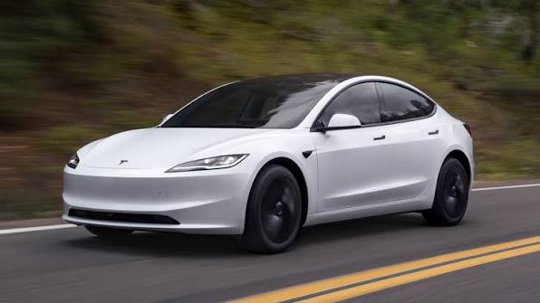

Tesla — Xalqaro birliklar tizimi SIda magnit induksiya birligi. T bilan
belgilanadi. 1Tqvb/m2, yaʼni 1 m2 yuzadan 1 veber magnit oqimi oʻtganida
magnit induksiya 1 T ga teng boʻladi. 1Tq104gs. Serb olimi N. Tesla
(Tesla) nomi bilan atalgan.